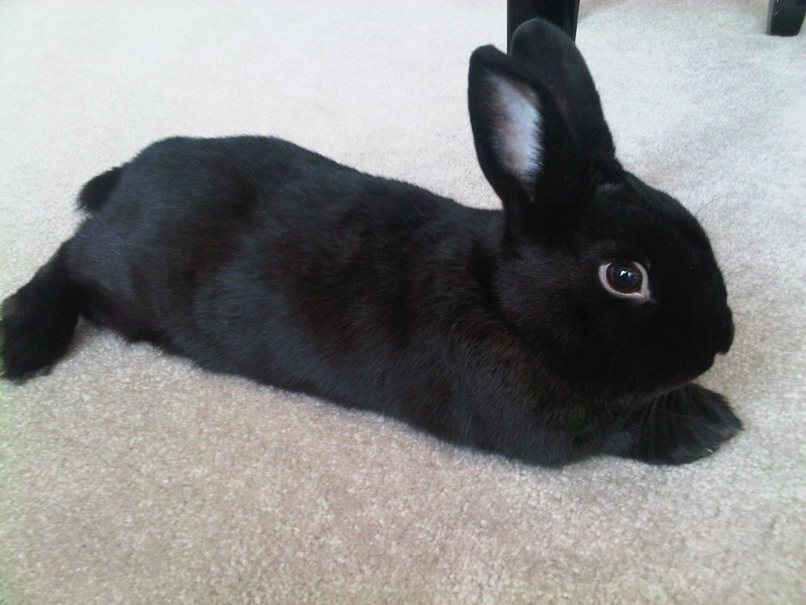
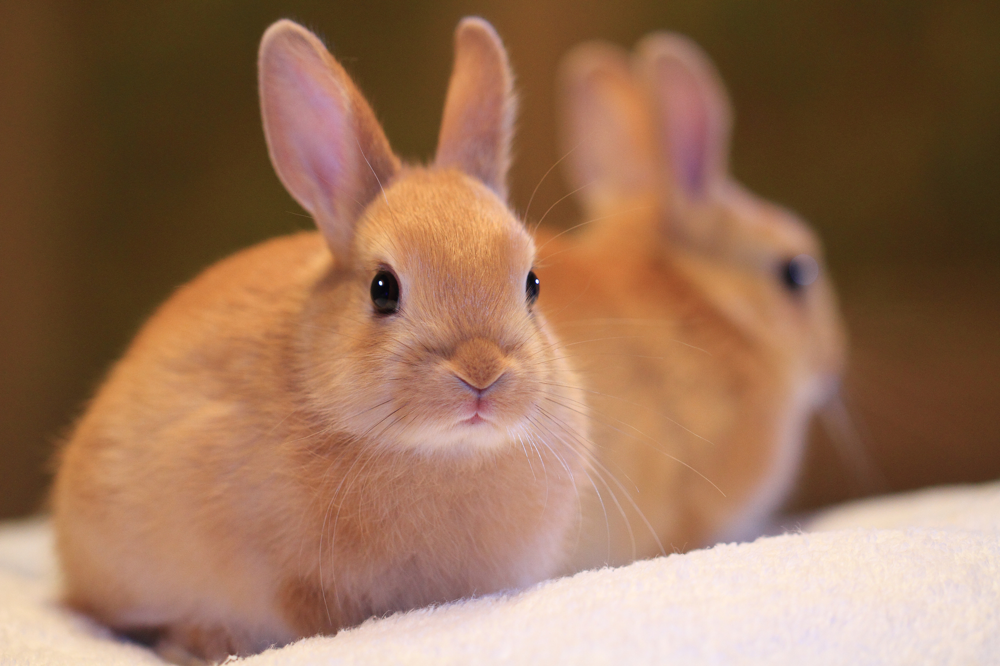

| Images |
Breeds |
Description |
|  |
Havana
|
The Havana rabbit breed made its debut in the Netherlands in 1898. The Fee de Marbourg, Perlefee, and Gris Perle de Hal are three breeds that are descended from this one. The American Rabbit Breeders Association recognizes Havanas in five color varieties: chocolate, lilac, black, and etc.
|
 |
American Fuzzy Lop
|
The American Rabbit Breeders Association has approved the American Fuzzy Lop as a breed of rabbit. It resembles a Holland Lop in look. The American Fuzzy Lop, on the other hand, is a breed of sheep that produces wool, comparable to that of the Angora breeds, however it will be shorter than that of a commercial Angora.
|
|  |
Netherland Dwarf Rabbit
|
Domestic rabbits of the Netherland Dwarf breed first appeared in the Netherlands. The Netherland Dwarf is one of the smallest rabbit breeds, weighing between 1.1 and 2.5 pounds. Its neotenic look might be the reason for its popularity as a pet or show rabbit.
|